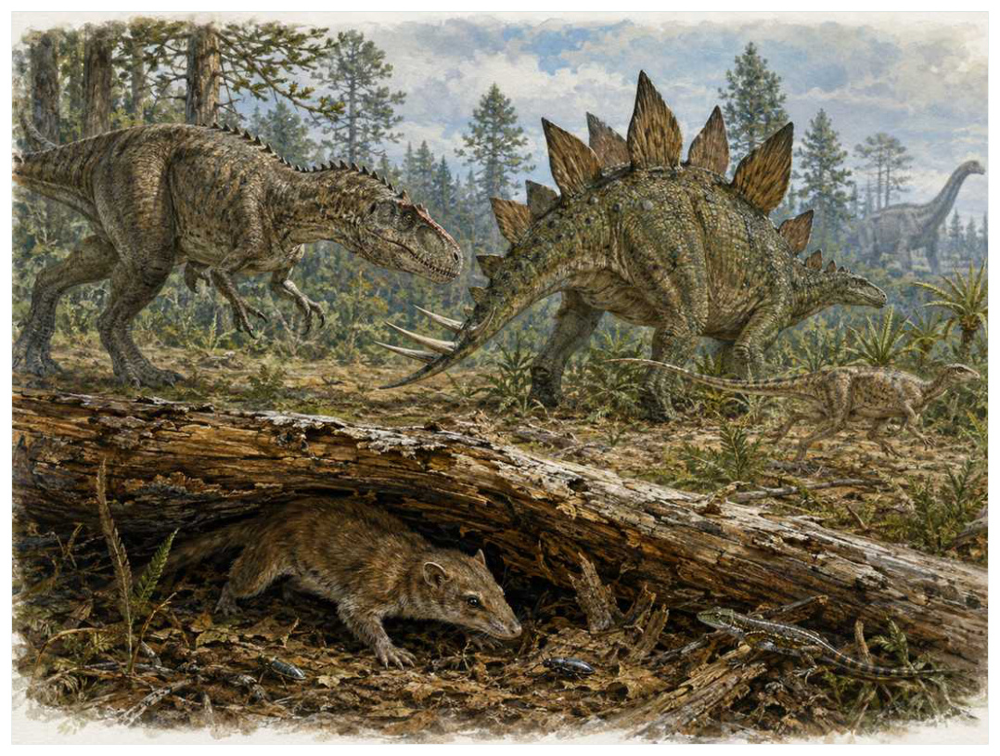

第12篇 · 侏罗纪：巨型恐龙与成熟中生代生态 · 第 42 章
侏罗纪的捕食、装甲与小型生命：巨兽阴影下的多样世界
本篇主题:侏罗纪：巨型恐龙与成熟中生代生态
大型蜥脚类、兽脚类、翼龙、海洋爬行动物和小型哺乳动物共同构成完整世界。

本章科学复原配图 （用于呈现结构与生态关系, 不替代化石照片、测量数据与系统发育证据。）
我们来到中侏罗世至晚侏罗世。最值得注意的不是“谁最强”，而是谁能把当时有限的能量转成更多存活后代。侏罗纪捕食者并非只围绕‘谁能击败最大蜥脚类’组织生活。角鼻龙、异特龙、蛮龙和更小型虚骨龙类在头骨强度、前肢、速度和猎物尺寸上分化；装甲恐龙通过背板、骨甲与尾部武器提高防御；小型哺乳形类、蜥蜴、蛙类和昆虫则占据夜间、树上、地下和水边生态位。生态系统的稳定依赖大量不显眼物种，而不是几只顶级捕食者。
进入这个时代
生态系统的真实声音不是巨兽咆哮，而是持续的摄食、分解、搬运和繁殖。每一具尸体、每一层落叶和每一次沉积扰动都会重新分配资源。一具蜥脚类尸体能在河漫滩形成数月乃至更久的资源岛：大型兽脚类先撕开厚皮，小型捕食者取食碎肉，甲虫和蝇类进入软组织，微生物完成分解。另一边，装甲恐龙用尾刺保持距离，小型哺乳形类在夜里寻找昆虫和种子。
在“侏罗纪的捕食、装甲与小型生命：巨兽阴影下的多样世界”所覆盖的时间里，不能把地理与气候当作固定背景。海陆位置、海平面、河流或植被结构会改变资源可达性，同一性状在不同地区可能得到完全相反的选择结果。
以侏罗纪的捕食、装甲与小型生命：巨兽阴影下的多样世界为例，物种数量并不等于生态功能。一个群落即使仍有许多物种，只要初级生产、授粉、礁体建造或大型植食等关键功能消失，食物网也会表现为深度崩溃。反过来，少数机会型物种高丰度并不代表系统已经恢复。 在本章中，这一约束具体落在“捕食者按猎物大小、环境和摄食方式分割生态位”这条关系上。
再从中侏罗世至晚侏罗世的时间尺度看，旧结构被重新利用是宏演化的常见路径。自然选择无法从零绘图，只能修改已有骨骼、膜、基因调控和生活史。后来承担新功能的结构，往往最初因完全不同的局部收益而扩散。 它与“兽脚类颅骨与前肢功能分化”共同决定了后续变化可以沿哪些路径发生。
生态系统如何运转
“捕食者按猎物大小、环境和摄食方式分割生态位”还会改变可利用空间。一个支系若能进入新的水深、植被高度或沉积层，竞争会暂时减弱；随后追随者、捕食者和寄生者又会把新空间变成新的互动网络。
围绕“捕食者按猎物大小、环境和摄食方式分割生态位”，从演化树看，相似关系可能在远亲中反复出现。功能相近不必意味着近缘，而同一祖先结构也可能被后代改作完全不同的用途；生态解释必须与系统发育互相校验。 对侏罗纪的捕食、装甲与小型生命：巨兽阴影下的多样世界而言，这一后果还会与“装甲和尾部武器提高攻击成本并促使捕食者选择弱小个体”相互放大或抵消。
把“装甲和尾部武器提高攻击成本并促使捕食者选择弱小个体”放进食物网，可以看到它不是孤立行为。它会影响种群密度、栖息地使用和尸体进入分解链的速度，并把后果传给并未直接参与互动的物种。
围绕“装甲和尾部武器提高攻击成本并促使捕食者选择弱小个体”，当环境快速越过生理阈值时，原有互动甚至来不及通过适应重新平衡。此时灭绝的选择性会更多取决于分布、食物来源和繁殖速度，而不是平时竞争中的相对强弱。对侏罗纪的捕食、装甲与小型生命：巨兽阴影下的多样世界而言，这一后果还会与“腐食网络把巨型尸体转为多营养级资源”相互放大或抵消。
理解“腐食网络把巨型尸体转为多营养级资源”需要区分个体事件与长期压力。偶然一次捕食只改变个体命运，持续数千代的稳定关系才可能推动牙齿、外壳、感觉器官或生活史发生方向性变化。
围绕“腐食网络把巨型尸体转为多营养级资源”，这种关系没有永恒赢家。收益随密度和环境改变：防御越常见，攻击专门化的价值越高；资源越稀少，维持昂贵结构的代价越大。化石记录中的扩张与衰退，常是这种动态平衡被外部事件打破的结果。对侏罗纪的捕食、装甲与小型生命：巨兽阴影下的多样世界而言，这一后果还会与“捕食者按猎物大小、环境和摄食方式分割生态位”相互放大或抵消。
关键演化创新
在“侏罗纪的捕食、装甲与小型生命：巨兽阴影下的多样世界”中，围绕“兽脚类颅骨与前肢功能分化”，“兽脚类颅骨与前肢功能分化”一旦出现，还会改变其他物种的环境。新的捕食方式、取食高度或繁殖场所会制造选择压力，促使整个群落而不只是发明者发生响应。 它首先需要在中侏罗世至晚侏罗世的生态条件下产生可测量收益。
就“兽脚类颅骨与前肢功能分化”而言，化石能较可靠地记录硬组织形态，却很少直接保留基因调控与短时行为。因此结构出现通常可信，最初用途和选择路径则应按证据标为主流解释或合理推测。 本章把它与“尾刺、骨板和骨甲防御”并列，是为了显示复杂性状往往依赖多部分协同。
在“侏罗纪的捕食、装甲与小型生命：巨兽阴影下的多样世界”中，围绕“尾刺、骨板和骨甲防御”，“尾刺、骨板和骨甲防御”没有把生物推向更高级层级，而是重新划分可利用资源。它让某些水层、食物尺寸、活动时间或繁殖地点变得可行，同时也带来能量、材料和发育控制成本。 它首先需要在中侏罗世至晚侏罗世的生态条件下产生可测量收益。
就“尾刺、骨板和骨甲防御”而言，其宏观影响往往滞后于结构起源。一个创新可以先在小型、稀少支系中存在数百万年，直到环境变化或竞争者灭绝后才迅速扩张；“出现”和“成为主导”是两个不同事件。 本章把它与“夜行、穴居与树栖小型生态位”并列，是为了显示复杂性状往往依赖多部分协同。
在“侏罗纪的捕食、装甲与小型生命：巨兽阴影下的多样世界”中，围绕“夜行、穴居与树栖小型生态位”，“夜行、穴居与树栖小型生态位”一旦出现，还会改变其他物种的环境。新的捕食方式、取食高度或繁殖场所会制造选择压力，促使整个群落而不只是发明者发生响应。 它首先需要在中侏罗世至晚侏罗世的生态条件下产生可测量收益。
就“夜行、穴居与树栖小型生态位”而言，这也提醒我们不要寻找单一关键基因。复杂性状由多个组织和调控网络协调，改变任何一环都可能产生不同结果，演化路径因此呈树状而非直线。 本章把它与“兽脚类颅骨与前肢功能分化”并列，是为了显示复杂性状往往依赖多部分协同。
生命群像：把物种放回生态网络
蛮龙（Torvosaurus tanneri）
蛮龙（Torvosaurus tanneri）存在于晚侏罗世。现有材料显示其大小约约9至11米，生态位置接近大型陆地捕食者。粗壮颅骨、长牙和有力前肢与异特龙形成不同捕食设计让它成为理解本章主题的合适案例，但不意味着同一类群所有成员都采用相同策略。
对蛮龙而言，相似环境可能让远亲出现相近轮廓，但内部结构会保留祖先限制。比较它与现代类比时，应只借用可检验的功能，不把现代动物的行为、社会制度或代谢水平整套复制到古生物身上。 这使“粗壮颅骨、长牙和有力前肢与异特龙形成不同捕食设计”不能脱离其大型陆地捕食者角色来理解。
现有认识建立在零散骨架支持大型体型，物种差异和最大估计仍随材料调整之上。古生物学的可信度不是来自一件戏剧化标本，而是来自多件标本、多个地点和不同方法得到相容结果。新发现若改变比例或分类，并非此前研究毫无价值，而是证据边界被重新画清。
由蛮龙这个案例看，从生态尺度看，它与本章其他成员共同维持一张网络。任何“最强”排名都会遗漏资源供应、幼体死亡、疾病和气候脉冲；真正决定长期成功的是种群能否在波动中不断完成繁殖。 它在晚侏罗世留下的记录，因此同时是第42章所讨论的形态史和生态史的一部分。
角鼻龙（Ceratosaurus nasicornis）
在晚侏罗世，角鼻龙（Ceratosaurus nasicornis）以约约5至7米的身体参与食物网。它不是孤立的“明星生物”，而是中大型捕食者；鼻角、深尾和不同牙齿比例可能适应河岸或特定猎物决定它能利用哪些资源，也决定必须承担哪些成本。
对角鼻龙而言，它既可能是捕食者、植食者或工程者，也同时是其他生物的猎物、竞争者和分解资源。一次取食只是一瞬，长期生态影响来自成千上万个体反复搬运营养、改变植被或扰动沉积物。体型越大，这种工程效应通常越明显，但恢复速度也常越慢。 这使“鼻角、深尾和不同牙齿比例可能适应河岸或特定猎物”不能脱离其中大型捕食者角色来理解。
支持该解释的材料包括与异特龙同域说明生态位分化；半水生程度的强说法证据有限。若不同证据出现冲突，应优先报告范围而不是强行给出单值。例如体长会随参照类群变化，运动能力会随软组织假设变化，系统位置也会随新增性状重新计算。
由角鼻龙这个案例看，它也展示专门化的双面性：结构在稳定环境中提高效率，却可能在气候、食物或竞争格局突变时限制转向。灭绝不是对设计的道德评分，而是性状、地理范围和偶然事件相遇后的历史结果。 它在晚侏罗世留下的记录，因此同时是第42章所讨论的形态史和生态史的一部分。
华阳龙（Huayangosaurus taibaii）
认识华阳龙（Huayangosaurus taibaii）要先放弃静态骨架印象。它生活在中侏罗世，约约4米，日常任务是作为低位植食装甲恐龙维持能量与繁殖。背板、肩刺和尾刺展示剑龙类早期装甲组合只是这一整套生活史中最容易化石化的部分。
对华阳龙而言，成年体型往往主导复原，但幼体可能使用完全不同的食物和栖息地。若成长阶段跨越多个生态位，种群就同时依赖多套环境；其中任一环节中断都可能导致长期衰退。化石骨床的年龄结构因此比单具最大标本更能说明生态。这使“背板、肩刺和尾刺展示剑龙类早期装甲组合”不能脱离其低位植食装甲恐龙角色来理解。
我们之所以能够作出上述判断，主要因为中国完整骨架支持结构，板片生理功能仍可能兼具展示和散热。单一结构通常有多种功能解释，所以还要查看磨损、病理、肌肉附着、沉积环境和近缘比较。计算模型能排除不可能姿势，却不能自动恢复没有保存的软组织。
由华阳龙这个案例看，面对仍有争议的细节，负责任的复原不是停止讲述，而是标注证据等级。形态、年代和亲缘可较确定，具体姿势、叫声、求偶和群猎则按材料降级；新标本会在这些边界内继续改写认识。 它在中侏罗世留下的记录，因此同时是第42章所讨论的形态史和生态史的一部分。
树鼩兽（Arboroharamiya jenkinsi）
树鼩兽（Arboroharamiya jenkinsi）生活在中晚侏罗世，已知体型约为约250克。它在群落中的角色可概括为树栖植食或杂食哺乳形类。最值得观察的结构是长指、抓握足和毛被显示中生代小型哺乳形类已进入树冠。这些结构不是为了后来时代而准备，而是在当时直接影响摄食、运动、防御或繁殖。
对树鼩兽而言，这种生活方式还会反向塑造环境。摄食改变植物或猎物结构，足迹和掘穴改变沉积，尸体和排泄物把营养集中到局部。生态位不是它进入的固定房间，而是它与其他生物共同建造并持续修改的关系网络。 这使“长指、抓握足和毛被显示中生代小型哺乳形类已进入树冠”不能脱离其树栖植食或杂食哺乳形类角色来理解。
其复原依赖系统位置在多瘤齿兽近亲或更基干支系间争论，滑翔能力不如近亲明确。年代和保存形态通常属于较强证据，体重、速度、颜色和社会行为则需要额外假设。书中把这些层次拆开，是为了让读者知道哪些可视为事实，哪些仍应等待更多材料。
由树鼩兽这个案例看，它不是祖先链条上必须跨过的一格。演化树中同时存在许多近缘支系，只有少数留下后代；旁支化石同样关键，因为它们显示某组性状出现的顺序和可行范围。 它在中晚侏罗世留下的记录，因此同时是第42章所讨论的形态史和生态史的一部分。
獭形狸尾兽（Castorocauda lutrasimilis）
在这一章的生命群像里，獭形狸尾兽（Castorocauda lutrasimilis）不能只当作图鉴名称。它出现于中侏罗世，体型大约约0.5至0.8米，主要生活方式是半水生捕鱼或无脊椎动物捕食者；扁尾、蹼足和致密毛被类似现代水獭与河狸的趋同则说明身体怎样围绕这一生活方式进行组合。
对獭形狸尾兽而言，相似环境可能让远亲出现相近轮廓，但内部结构会保留祖先限制。比较它与现代类比时，应只借用可检验的功能，不把现代动物的行为、社会制度或代谢水平整套复制到古生物身上。 这使“扁尾、蹼足和致密毛被类似现代水獭与河狸的趋同”不能脱离其半水生捕鱼或无脊椎动物捕食者角色来理解。
科学家并未直接看见它生活，依据是软组织印痕和骨骼支持半水生，证明哺乳形类并非都局限于地表食虫。现代类比可以帮助提出可检验模型，却不能取代化石；越具体的短时行为，越需要痕迹、内容物或重复病理等直接线索。
由獭形狸尾兽这个案例看，这个案例还提醒我们，亲缘和生态角色是两件事。近亲可以因资源分化而外形迥异，远亲也能因相似压力而趋同。把它放在演化树和食物网两个坐标中，才不会误写成线性进步。 它在中侏罗世留下的记录，因此同时是第42章所讨论的形态史和生态史的一部分。
因果链：环境、生态与性状
从时间顺序看，“兽脚类颅骨与前肢功能分化”的最早记录不等于它立即改写生态系统。结构可能先以小幅变异出现在稀少支系中，经历很长的试验期，直到“捕食者按猎物大小、环境和摄食方式分割生态位”所代表的资源条件或竞争格局改变，才出现可见的辐射。反过来，一个支系在化石记录中突然繁盛，也不证明关键结构刚刚产生；保存窗口打开、地理扩散或生态位释放都能造成类似图景。因此讨论中侏罗世至晚侏罗世的创新时，本章把“首次出现”“功能完善”“多样化”和“成为生态主导”分成四个问题，避免用一个日期替代整段历史。
在中侏罗世至晚侏罗世，身体不是若干部件的简单相加。“兽脚类颅骨与前肢功能分化”只有与“夜行、穴居与树栖小型生态位”在供能、控制和发育上兼容，才可能稳定遗传；局部性能提高若超过呼吸、循环或支撑能力，整体反而失效。华阳龙的背板、肩刺和尾刺展示剑龙类早期装甲组合因此应放进完整身体比例中解释，而不是把某一器官单独夸大。生物力学模型可以估算受力和运动范围，组织学能限制生长速度，近缘比较能提示同源关系；三者相互校验，才有可能从静态化石走向一个能够活着完成日常活动的动物或植物。
种群层面的成功还要考虑波动，而不仅是平均状态。在资源丰富年份，“尾刺、骨板和骨甲防御”带来的高性能可能迅速增加个体数；在低谷年份，维持该结构的成本又会放大死亡。若角鼻龙拥有较广食谱或可迁移，便可能跨过低谷；若其鼻角、深尾和不同牙齿比例可能适应河岸或特定猎物高度依赖单一环境，恢复就更困难。化石群落中的丰度峰值、体型变化和地理收缩能为这种“繁荣—压力—恢复”循环提供线索，但必须与采样偏差区分。对中侏罗世至晚侏罗世的任何稳态描述，都只是长期波动中被岩层保存的一小段。
本章的因果链最终落在繁殖上。“装甲和尾部武器提高攻击成本并促使捕食者选择弱小个体”改变个体获得资源和避开风险的方式，“兽脚类颅骨与前肢功能分化”改变身体能做什么，但只有这些差异持续影响配子、胚胎、幼体和成体留下后代的概率，演化频率才会跨世代变化。蛮龙和角鼻龙的化石常让人关注尺寸或武器，然而巢、蛋、芽孢、孢粉、幼体壳和成长线往往更接近选择真正发生的位置。理解侏罗纪的捕食、装甲与小型生命：巨兽阴影下的多样世界，因此要把最壮观的成年结构重新接回完整生活史。
把“兽脚类颅骨与前肢功能分化”拆成成本与收益，可以避免把演化创新写成无条件升级。它可能扩大摄食、运动或繁殖的边界，却要付出组织材料、发育协调和日常维持的代价；“尾刺、骨板和骨甲防御”又会改变这笔账在不同生命阶段的分配。对蛮龙而言，粗壮颅骨、长牙和有力前肢与异特龙形成不同捕食设计在成年阶段或许十分醒目，但种群能否延续仍取决于幼体是否能找到食物、是否有安全的生长场所以及环境波动后是否保留繁殖者。化石往往偏爱成年硬组织，因此书写中侏罗世至晚侏罗世时必须主动补上这些不易保存却决定长期命运的环节。
时代横截面：个体、种群与证据
证据强度也应逐句区分。骨骼咬痕、断裂与愈合记录攻击若直接记录形态或行为痕迹，可把某些可能性排除；牙齿微磨损和有限元模型比较咬合方式若来自模型或现代类比，则通常提供范围而非唯一答案。对华阳龙的背板、肩刺和尾刺展示剑龙类早期装甲组合，我们也许能高可信地描述结构，却只能以主流解释讨论功能，以合理推测讨论日常行为。把层级写出来不会削弱故事，反而让读者知道未来新发现最可能改动哪一部分。
把结构看作模块，可以解释为什么过渡类型常显得“新旧并存”。蛮龙的粗壮颅骨、长牙和有力前肢与异特龙形成不同捕食设计可能已经接近后来状态，而呼吸、繁殖或运动的其他部分仍保留祖征；角鼻龙可能采用另一种组合达到相似功能。演化不要求所有部件同步改变，只要求每个阶段的完整个体能够生活和繁殖。正因如此，真实谱系会产生旁支、回退和多次独立试验，而不是教科书式直梯。
再把华阳龙加入横截面，群落关系会从两者比较变成网络。它作为低位植食装甲恐龙，通过背板、肩刺和尾刺展示剑龙类早期装甲组合连接资源与其他消费者；其数量变化可能同时影响蛮龙和角鼻龙，甚至改变分解链和营养循环。这样的间接效应很少能由一具骨架直接证明，却可以从物种共现、丰度、痕迹化石和环境指标中受到约束。侏罗纪的捕食、装甲与小型生命：巨兽阴影下的多样世界的生态复原因此需要群落数据，而不只是著名标本的精细解剖。
地理同样会拆散看似整齐的时代标签。中侏罗世至晚侏罗世并不是全球同时拥有同一种气候与群落：海盆深浅、纬度、山脉、河流和大陆隔离会让蛮龙、角鼻龙与华阳龙的分布错开。一个支系可能在某地区衰退、在另一地区成为避难所；后来扩散又会造成化石记录中的“重新出现”。因此本章的代表物种用于说明机制，而不意味着它们都在同一地点同一时刻相遇。
“谁取代了谁”常把复杂过程压成单线叙事。在侏罗纪的捕食、装甲与小型生命：巨兽阴影下的多样世界中，即使角鼻龙在某层位后减少、华阳龙随后增加，也可能是二者分别响应气候或栖息地，而不是直接竞争导致淘汰。需要检查时间误差、地理重叠和资源相似度；只有三者都支持，替代关系才更可信。更多时候，生态系统通过功能重新组合过渡，旧支系与新支系会长期并存。
科学家为什么这样判断
“骨骼咬痕、断裂与愈合记录攻击”最有价值的地方，是它能排除某些流行复原。关节不允许的姿势、承重无法支持的速度、与沉积环境冲突的生活方式，都可以被证据淘汰；剩余模型仍可能不止一个。
“牙齿微磨损和有限元模型比较咬合方式”提供的是一类约束而非完整录像。它可能精确记录某一瞬间，却未必代表全年或整个物种；也可能反映长期平均，却无法指出单次行为。把不同时间尺度的证据组合，才能重建生态过程。
“小型动物特异埋藏化石纠正大型骨骼偏差”还需要与年代学绑定。只有事件先后关系可靠，才能讨论因果；若环境变化和生物响应的误差范围大量重叠，就应表述为相关或可能机制，而不是宣布已经证明。
在“侏罗纪的捕食、装甲与小型生命：巨兽阴影下的多样世界”这一问题上，把上述方法合在一起，研究者才能从残缺材料走向受约束的复原。任何一条证据都可能受到成岩、污染、样本量或现代类比的限制；结论越具体，越需要多条独立证据指向同一方向，并与中侏罗世至晚侏罗世的地层背景相容。
过去的图景与今天的证据
大型兽脚类是否群猎是公众最常过度推断的问题之一。同一地点多具个体可能来自干旱水源集中、洪水搬运或长期尸体积累；平行足迹能支持同向移动，却未必等于协调围猎。群体行为可能存在，但应逐个证据判断。
围绕“侏罗纪的捕食、装甲与小型生命：巨兽阴影下的多样世界”，当多种机制可以并存时，不应为了故事简洁强迫选择唯一原因。氧气、温度、营养、捕食和地理隔离常形成反馈，研究目标是约束各环节的时间和强度，而不是寻找一句万能口号。
对中侏罗世至晚侏罗世的材料而言，数据存在范围时，本书使用约数而非虚假精确值。体型会因缺失骨骼和软组织密度变化，年代会因定年误差调整，灭绝比例会因分类和采样校正改变；一个区间往往比醒目的单值更科学。
跨尺度观察
证据等级：地层年代和硬组织形态通常最强，食性若有多种独立线索可达主流解释，颜色、群居、求偶和叫声则常停留在合理推测。把等级写清并不会破坏画面，反而让读者知道想象可以走到哪里。 在“侏罗纪的捕食、装甲与小型生命：巨兽阴影下的多样世界”中，这一尺度具体连接了“捕食者按猎物大小、环境和摄食方式分割生态位”与“兽脚类颅骨与前肢功能分化”，因而不能只从单个成年标本判断。
幼体视角：幼体常比成体更小、食物不同、耐受范围更窄。一个支系可在成年阶段拥有强大防御，却因卵、胚胎或幼体栖息地消失而灭绝。巢、蛋、成长线和年龄结构因此是解释繁殖策略的重要证据。 在“侏罗纪的捕食、装甲与小型生命：巨兽阴影下的多样世界”中，这一尺度具体连接了“装甲和尾部武器提高攻击成本并促使捕食者选择弱小个体”与“尾刺、骨板和骨甲防御”，因而不能只从单个成年标本判断。
生态工程：生物不是被动放在环境里。根系、礁体、洞穴、粪便和迁徙都会改变水流、土壤、养分与栖息地结构。工程效应一旦扩散，后续物种面对的环境已经是前一批生命共同建造的。在“侏罗纪的捕食、装甲与小型生命：巨兽阴影下的多样世界”中，这一尺度具体连接了“腐食网络把巨型尸体转为多营养级资源”与“夜行、穴居与树栖小型生态位”，因而不能只从单个成年标本判断。
通向下一个时代
从本章走向下一阶段时，需要保留的不是一串物种名，而是一个因果链：环境改变可用能量与栖息地，生态关系筛选性状，性状又反过来改造环境。侏罗纪后期，小型有羽毛兽脚类与早期鸟类开始展示飞行相关结构。真正改变白垩纪陆地底盘的另一事件，则是开花植物和传粉昆虫关系网的扩张。
本章精选来源
- [R64] Sander, P. M. et al. Biology of the sauropod dinosaurs: the evolution of gigantism. Biological Reviews 86, 117-155 (2011).
- [R65] Wedel, M. J. Vertebral pneumaticity, air sacs, and the physiology of sauropod dinosaurs. Paleobiology 29, 243-255 (2003).
- [R66] Benson, R. B. J. et al. Rates of dinosaur body mass evolution indicate 170 million years of sustained ecological innovation on the avian stem lineage. PLoS Biology 12, e1001853 (2014).
- [R67] Barrett, P. M. Paleobiology of herbivorous dinosaurs. Annual Review of Earth and Planetary Sciences 42, 207-230 (2014).
- [R68] Xu, X. et al. An integrative approach to understanding bird origins. Science 346, 1253293 (2014).